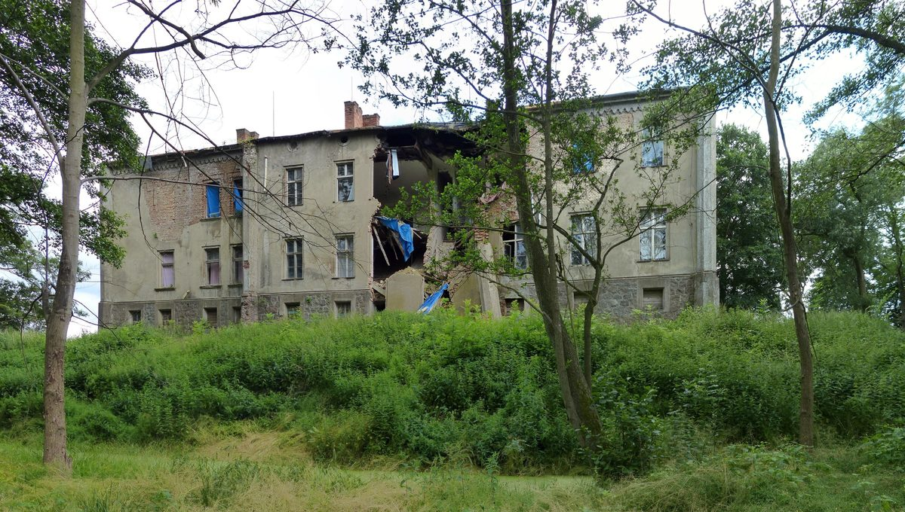

독일 알트비히스하겐 의회, 10일 석면 지붕 무료 교체·태양광과 풍력단지 지자체 몫 안건 다룬다

소방서·옛 학교 지붕을 운영사가 교체하고 패널 설치…풍력단지는 가동 때부터 지자체에 0.2센트 지급, 의회 결정은 아직
독일 알트비히스하겐 의회가 11월 10일 19시 마을회관 회의실에서 태양광과 풍력 관련 두 안건을 다룬다. 하나는 마을회관 지붕 태양광 설치이고, 다른 하나는 풍력설비에 대한 지자체의 재정 참여 계약 체결이며 소방서 지붕 태양광도 함께 논의한다. 지금 다목적 건물로 쓰는 옛 초등학교 건물은 지붕이 함석이고 석면 비중이 큰데, 원칙 결의가 통과되면 소방서와 이 건물 지붕을 운영사가 완전히 무료로 교체하고 태양광 패널을 얹는다. 얀 플로그스티스 시장은 "지붕 구조 비용도 운영사가 부담하게 된다"고 말하며 건물이 30~50년간 구조적으로 보전되기를 바란다고 밝혔다. 풍력 결의가 통과되면 지자체는 가동 때부터 풍력단지 운영사에서 발전량에 비례해 0.2센트를 받는다. 두 안건 모두 의회 결정 전이고, 풍력단지의 이름과 규모는 알려지지 않았다.
시민에너지 관점
석면 지붕은 작은 마을이 혼자 감당하기 어려운 비용인데, 운영사가 교체와 지붕 구조 비용을 지는 조건이 붙자 태양광이 건물을 살리는 방편이 됐다. 독일 재생에너지법은 풍력 사업자가 입지 지자체에 kWh당 최대 0.2센트를 낼 수 있게 하고 있어, 이번 계약도 법이 마련한 이익 공유 장치를 쓰는 셈이다. 다만 이 계약은 지자체가 사업의 주인이 되는 것이 아니라 사업자가 정한 몫을 받는 방식이어서, 소유 지분까지 가야 마을의 몫이 커진다. 한국의 지자체와 주민도 사업자와 협약할 때 건물 보수나 지붕 지원 같은 현물 조건과 수익 몫, 이후 지분 참여 방안을 한 묶음으로 요구해야 한다.
출처: Nordkurier 2026-11-09 Mathias Scherfling 원문 보기
ドイツ・アルトヴィグスハーゲン議会、10日にアスベスト屋根の無償交換・太陽光と風力発電所の自治体取り分の議案を審議
消防署・旧校舎の屋根を運営会社が交換しパネルを設置…風力発電所は稼働時から自治体に0.2セントを支払い、議会の決定はまだ
ドイツ・アルトヴィグスハーゲン(Altwigshagen)の議会が、11月10日19時に公民館の会議室で、太陽光と風力に関する二つの議案を審議する。一つは公民館の屋根への太陽光設置で、もう一つは風力設備に対する自治体の財政参加契約の締結であり、消防署の屋根の太陽光も併せて協議する。現在は多目的施設として使われている旧小学校の建物は、屋根が亜鉛メッキ鋼板でアスベストの割合が大きいが、原則決議が可決されれば、消防署とこの建物の屋根を運営会社が完全に無償で交換し、太陽光パネルを載せる。ヤン・プロークスティース(Jan Plogsties)村長は「屋根の構造の費用も運営会社が負担することになる」と述べ、建物が30～50年にわたり構造的に保たれることを望むと語った。風力の決議が可決されれば、自治体は稼働時から風力発電所の運営会社から、発電量に比例して0.2セントを受け取る。二つの議案はいずれも議会の決定前で、風力発電所の名称と規模は明らかになっていない。
市民エネルギーの視点
アスベストの屋根は小さな村が単独で負担するには重い費用だが、運営会社が交換と屋根構造の費用を負うという条件がつくと、太陽光は建物を救う手段になった。ドイツの再生可能エネルギー法は、風力事業者が立地自治体にkWhあたり最大0.2セントを支払えるようにしており、今回の契約も、法が用意した利益共有の仕組みを使うことになる。ただし、この契約は自治体が事業の主人になるのではなく、事業者が決めた取り分を受け取る方式であり、所有持ち分まで進んではじめて村の取り分が大きくなる。韓国の自治体と住民も、事業者と協約を結ぶ際は、建物の補修や屋根支援といった現物条件と収益の取り分、その後の持ち分参加案を一括りにして求めるべきだ。
出典: Nordkurier 2026-11-09 Mathias Scherfling 原文を読む
德国阿尔特维格斯哈根议会10日审议石棉屋顶免费更换、光伏及风电场市镇分成议案
消防站和旧校舍屋顶由运营商更换并安装光伏板…风电场自投运起向市镇支付0.2欧分，议会尚未作出决定
德国阿尔特维格斯哈根（Altwigshagen）议会将于11月10日19时在村民会堂会议室审议光伏和风电两项议案。一项是在村民会堂屋顶安装光伏，另一项是就风电设施签订市镇财政参与合同，同时还将讨论消防站屋顶光伏。目前作为多功能建筑使用的旧小学校舍，屋顶为镀锌铁皮，石棉占比较大。如果原则性决议获得通过，消防站和这栋建筑的屋顶将由运营商完全免费更换，并铺设光伏板。镇长扬·普洛格斯蒂斯（Jan Plogsties）说：“屋顶结构的费用也将由运营商承担。”他希望这些建筑能在结构上保全30至50年。如果风电决议获得通过，市镇将自风电场投运起，按发电量比例从风电场运营商处获得0.2欧分。两项议案均未经议会决定，风电场的名称和规模也尚未公布。
市民能源视角
石棉屋顶对一个小村庄来说是难以独力承担的费用，而当运营商承担更换和屋顶结构费用的条件附上之后，光伏就成了保住建筑的办法。德国《可再生能源法》允许风电开发商向所在市镇每千瓦时最多支付0.2欧分，这次合同也是在利用法律准备好的利益分享机制。不过，该合同并非让市镇成为项目的主人，而是领取开发商确定的份额，只有走到持有股权这一步，村庄的收益才会变大。韩国的地方政府和居民在与开发商签订协议时，也应把建筑维修或屋顶支援等实物条件、收益份额以及此后的参股方案作为一揽子内容提出要求。
来源: Nordkurier 2026-11-09 Mathias Scherfling 查看原文
Germany's Altwigshagen Council to Take Up Free Replacement of Asbestos Roofs and a Municipal Share of Solar and Wind Revenue on the 10th
Operator to replace fire station and former school roofs and install panels; wind farm to pay the municipality 0.2 cents from start of operation, with no council decision yet
The council of Altwigshagen, Germany, will take up two items on solar and wind power at 7 p.m. on November 10 in the meeting room of the community hall. One is installing solar on the community hall roof; the other is signing a contract for the municipality's financial participation in wind turbines, and solar on the fire station roof will be discussed as well. The former primary school building, now used as a multipurpose building, has a sheet-metal roof with a large share of asbestos. If a resolution in principle passes, the operator will replace the roofs of the fire station and this building entirely free of charge and put solar panels on them. Mayor Jan Plogsties said: "The operator would also bear the costs of the roof structure," and that he wants the buildings to be structurally preserved for 30 to 50 years. If the wind resolution passes, the municipality will receive 0.2 cents in proportion to output from the wind farm's operator from the start of operation. Neither item has been decided by the council, and the name and size of the wind farm are not known.
Citizen Energy View
Asbestos roofs are a cost a small village can hardly bear alone, and once the operator takes on the replacement and the roof structure, solar becomes a way to save the buildings. Germany's Renewable Energy Sources Act allows wind developers to pay host municipalities up to 0.2 cents per kWh, so this contract too uses a benefit-sharing mechanism the law provides. But under this contract the municipality does not become an owner of the project; it receives a share the developer sets, and the village's take grows only if it goes as far as an ownership stake. When Korean municipalities and residents sign agreements with developers, they, too, should demand in one package in-kind conditions such as building repairs or roof support, a share of the revenue, and a plan for taking an equity stake later.
Source: Nordkurier 2026-11-09 Mathias Scherfling Read the original